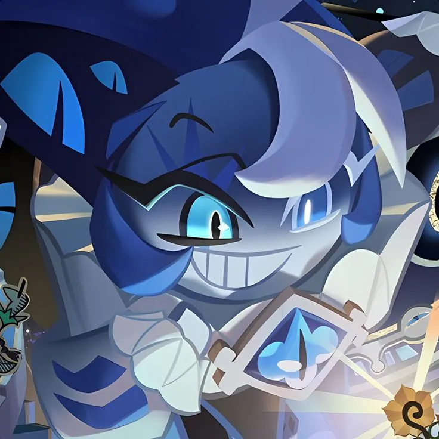

Ana Clara
Coordenadora de Design
Biografia
Um pouco sobre mim
Saudações, me chamo Ana Clara, já tenho os meus 18 anos e estou terminando o curso do Técnico de Informática, e a escola também. E em breve, vou me tornar uma animadora e fazer minha própria animação e ter o meu próprio Studio! Quero deixar a minha marca nas animações como Tim Burton e no Teatro! Quero também ser escritora e publicar meus futuros livros e fazer um jogo também inspirado em um dos meus favoritos, Fran Bow.
🍰 Meu Aniversário
11 de Junho
🕹️ Jogos Favoritos
| Ícone do Jogo | Nome do Jogo | Desenvolvedora |
|---|---|---|
 |
Fran Bow | Killmonday |
 |
Bendy: The Ink Machine | Kindly Beast Games |
 |
Bendy: The Dark Revival | Kindly Beast Games |
 |
Little Missfortune | Killmonday |
 |
Hollow Knight | Team Cherry |
 |
Cookie Run: Kingdom | DevSisters |
 |
Jack in The Box | tayoDEV |
🧝🏻 Personagens Favoritos
| Foto do Personagem | Nome do Personagem | Origem do Personagem |
|---|---|---|
 |
Laughing Jack | Sem Origem Informada |
 |
Fran Bow | Fran Bow (Game) |
 |
Itward | Fran Bow (Game) |
 |
Remor | Fran Bow (Game) |
 |
Capitão Jack Sparrow | Piratas do Caribe |
 |
Alice | Alice no país das maravilhas |
 |
Chapeleiro Maluco | Alice no país das maravilhas |
 |
Gato de Cheshire | Alice no país das maravilhas |
| Shadow Milk Cookie | Cookie Run: Kingdom |